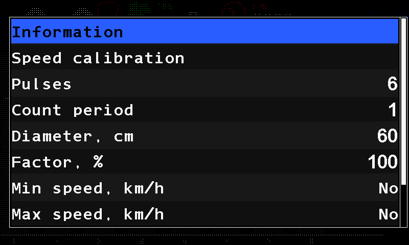
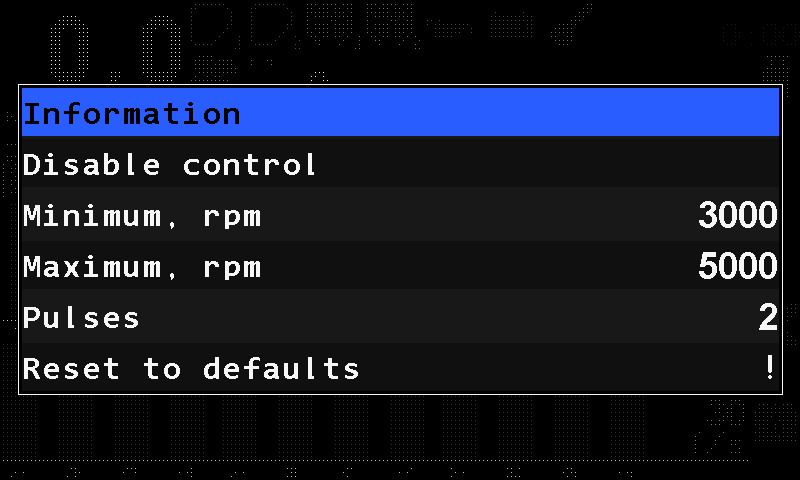

Réglages des capteurs
Comment accéder aux réglages d'un capteur, ce que contient son menu contextuel et quels étalonnages existent.
Chaque capteur, actionneur et moteur de la machine a ses propres réglages et son propre écran d'état. Les deux s'ouvrent depuis l'écran d'accueil. Les paramètres de chaque type de capteur sont décrits dans les rubriques qui suivent celle-ci.
Accéder à un capteur
Sur l'écran d'accueil, maintenez « MENU » enfoncé quelques secondes. Le boîtier passe en mode de réglage des capteurs ; le capteur sélectionné est entouré d'un rectangle blanc.
Passez d'un capteur à l'autre avec « UP » / « DOWN ». « PLUS » place le capteur sélectionné sous surveillance, « MINUS » le met hors surveillance — voir Mettre un capteur sous ou hors surveillance.
Appuyez sur « MENU ». Le menu contextuel du capteur sélectionné s'ouvre.

Le menu contextuel du capteur de vitesse. Appuyez sur « BACK » pour quitter le mode.
Un appui prolongé sur la vignette d'un capteur à l'écran ouvre directement le même menu contextuel.
Le menu contextuel

- « Information » — ouvre l'écran d'état de ce capteur. L'écran d'état du capteur.
- « Disable control » (désactiver la surveillance) / « Enable control » (activer la surveillance) — met le capteur hors surveillance, ou le remet sous surveillance. La première fois dans une session, le boîtier demande une confirmation.
- Les paramètres de ce capteur — ici les trois d'un capteur de turbine. Ceux que vous voyez dépendent du niveau d'accès.
- La valeur actuelle. Sélectionnez la ligne ; la valeur se tient entre – et + et se modifie avec « MINUS » / « PLUS ».
- « Reset to defaults » (valeurs par défaut) — remet les paramètres de ce capteur aux valeurs d'usine. Niveau Service uniquement.

L'écran d'état
« Information » ouvre l'écran d'état du capteur : son identité, sa liaison, ses valeurs en direct et ses alarmes actives. Comment le lire : L'écran d'état du capteur.
Étalonnages
Il existe quatre étalonnages. Ce ne sont pas les variantes d'une même procédure : chacun écrit des paramètres différents et s'atteint par un chemin différent.
| Ce qu'il corrige | Où | Niveau | Machine |
|---|---|---|---|
| La vitesse d'avancement — les impulsions du capteur de vitesse sur une distance connue. Étalonner le capteur de vitesse | « Settings » (réglages) → « Seeding machine parameters » (paramètres du semoir) → « Speed calibration » (étalonnage de la vitesse) | Agronomist | parcourt 100 m |
| La rotation du doseur — « Wheel, pulses » (impulsions de la roue) par rapport à « Dispenser pulses » (impulsions du doseur). Étalonner la rotation du doseur | « Settings » → « Seeding machine parameters » → « Dispenser calibration » (étalonnage du doseur) | Agronomist | roue et arbre du doseur tournés ensemble |
| La masse du doseur — « Weight, gr » (poids, g) et « Weight, pulses » (poids, impulsions). Étalonner le doseur au poids | menu contextuel du capteur de doseur | Operator | à l'arrêt |
| La masse du cylindre de dosage — « Weight, gr » et « Rotations » (rotations) d'un moteur. Étalonner un moteur de dosage au poids | menu contextuel du moteur électrique du doseur | Operator | à l'arrêt |
Les deux étalonnages de menu exigent le niveau « Agronomist », comme le menu qui y conduit. Les deux étalonnages de masse sont au niveau « Operator » (opérateur), parce qu'il faut les refaire chaque fois que le produit change.
Votre machine fait quelque chose que cette page n'explique pas ? Écrivez à support@agriwelt.com — un ingénieur vous répond.